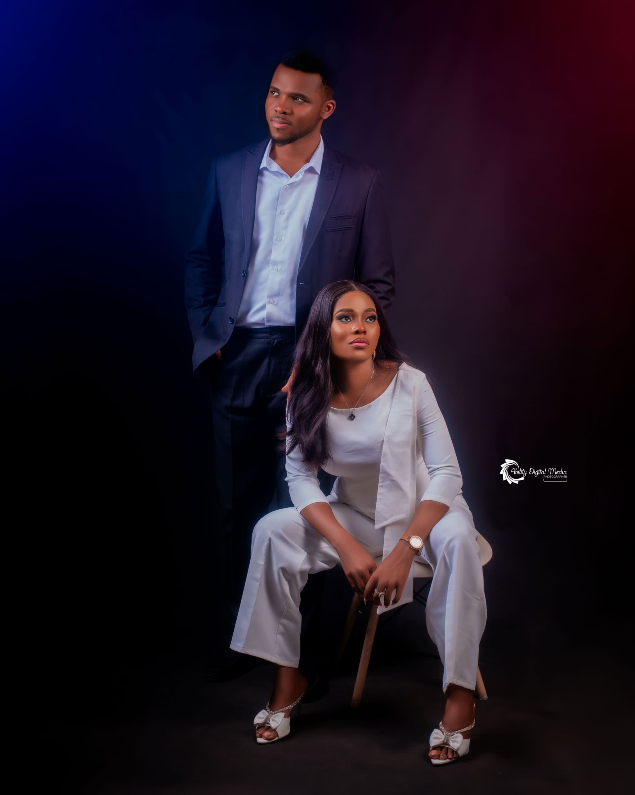

Hi there! 👋 My name is Ugochukwu Okpala, and I’m a budding HTML web developer with a passion for crafting simple, functional, and visually appealing websites. Transitioning from a background in Physics and Industrial Physics, I’ve found my love for programming and web development, where I get to blend logic, creativity, and technology to bring ideas to life.
Currently, I’m expanding my expertise through training in various programming languages, including HTML, Python, and Node.js, while pursuing a CompTIA A+ certification to deepen my understanding of IT fundamentals.
I believe in the power of clean and efficient code to create seamless user experiences, and I’m excited to start contributing to real-world projects. Whether it’s structuring web pages or collaborating with teams to solve problems, I’m eager to grow and make an impact in the tech world.
When I’m not coding, I love spending quality time with my lovely family, working on self-improvement, and exploring new ways to grow personally and professionally. 
Feel free to explore my portfolio, and don’t hesitate to reach out if you’re looking for a passionate developer ready to bring fresh perspectives to your team or project!